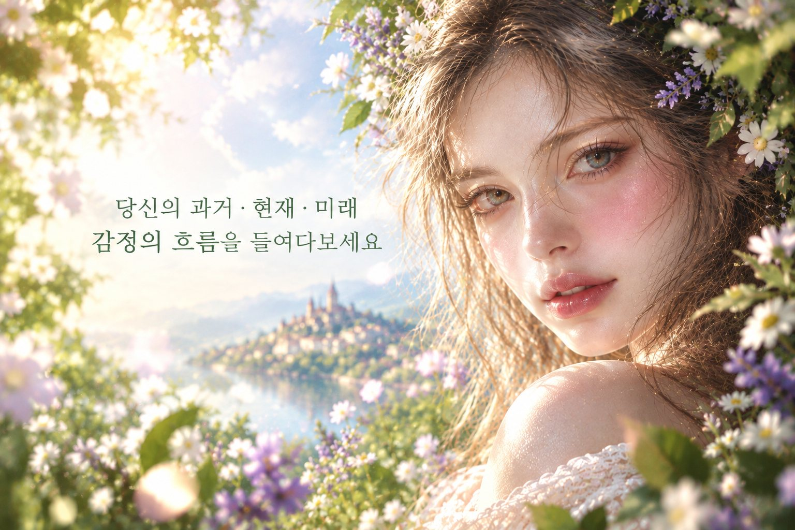

지금 마음에 걸리는 일을 떠올리며 42장의 향기 카드 가운데 7장을 고르세요. 과거에서 앞으로의 흐름까지 일곱 자리에 놓인 향이 마음을 읽어 주고, 생년월일시로 본 오행에 맞춰 원석과 아로마 블렌딩을 처방해 드립니다.
오행 솔루션에 쓰입니다. 비워 두면 카드 리딩만 보여 드려요.
천천히 숨을 고르고, 고민을 하나 떠올린 채 손이 가는 카드를 차례로 눌러 주세요. 고른 순서대로 아래 자리에 놓입니다.
카드를 누르면 해당 해석으로 이동합니다.
말굽 배열 · 왼쪽 위에서 시작해 아래를 지나 오른쪽 위로 흐릅니다
리딩 결과에 맞춰 블렌딩한 아로마 오일과 원석을 준비해 드립니다. 이름과 연락처를 남겨 주시면 확인 후 연락드릴게요.